I headed to the Alps without Sophie in an attempt to summit Mont Blanc with Mum and Dave...
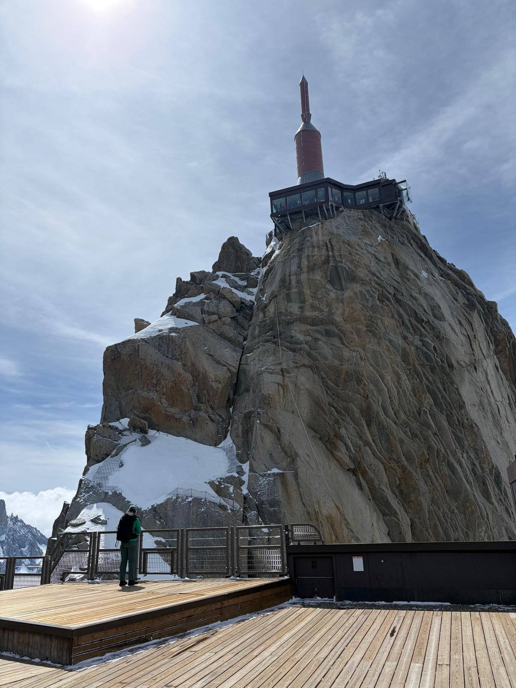
1st June 2026
I arrived in Chamonix by bus from Geneva the day before. The weather was quite warm from the start even though we were in the alps! Our goal was to get acclimatised to the altitude before the summit trip started in earnest. We went up the cable car to Aiguille du Midi, around 3,800 meters in elevation. We gazed out over the alps and marvelled at the breathtaking views as we drank hot chocolate.
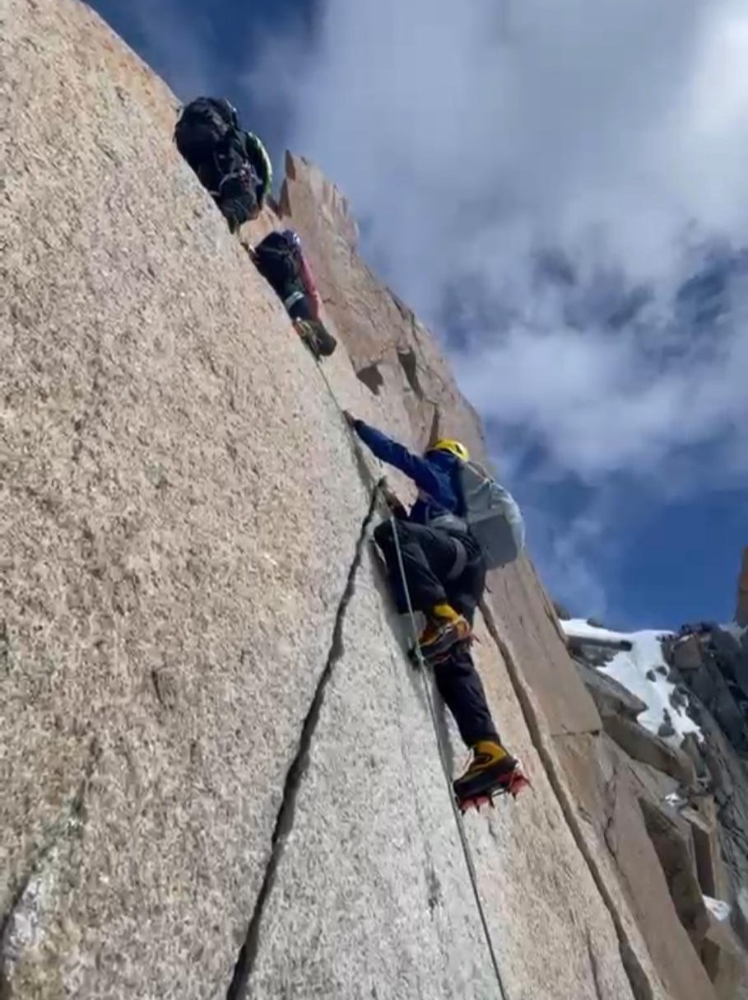
2nd June 2026
We had hoped we had done enough acclimtisation as we gathered at Aguille du Midi to tackle the Cosmiques Arrete! It started with a steep descent onto a flat area which was the dangerous part with potential for crevasses. We quickly traversed, heading back up to the ridge where we would start to climb. Using an ice axe and crampons properly for the first time was difficult but it was super fun. We didn't feel the altitude much at all and ended the day satisfied with our efforts and the awesome feeling of having been exposed on the knife edge ridge.
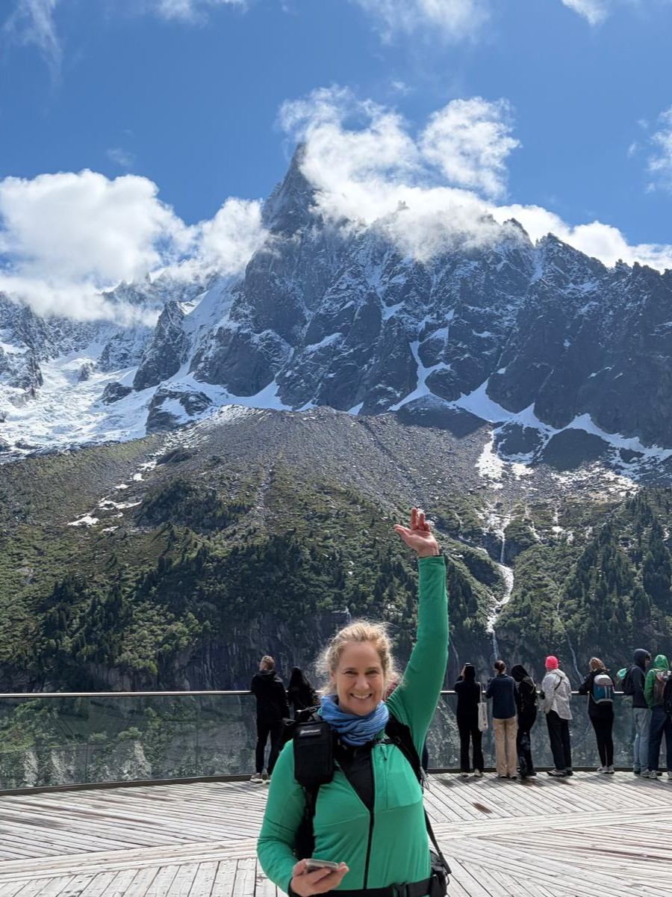
3rd June 2026
We decided to change things up and took the train out to the Mer de Glace, one of the most famous glaciers in the Alps. Although we didn't get to walk on it we saw the famous Dru, a climb I would like the do in the future. It was amazing seeing the clouds wisp past the top and you can imagine the danger if the weather had changed. From there we hiked up and around back into Chamonix taking part of the Mont Blanc tour. We saw marmots scurrying around the rocks.
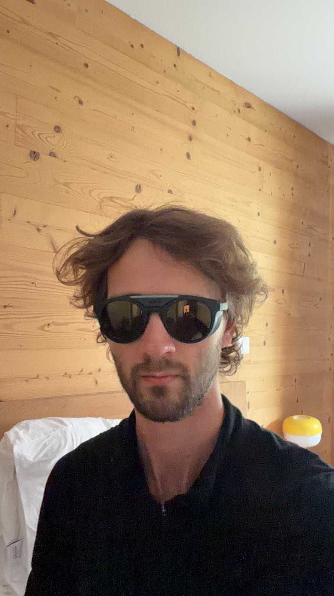
4th June 2026
I can't remember what we did on this day :)
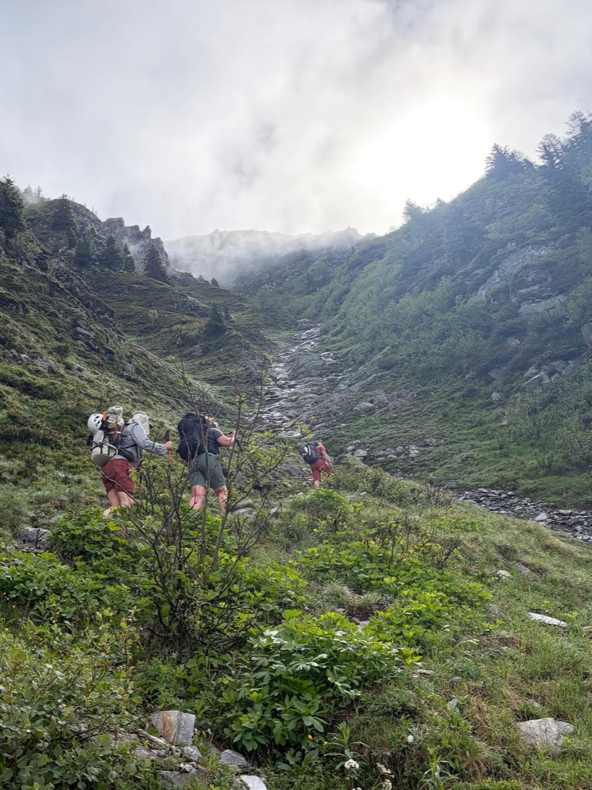
5th June 2026
It was time to start our training for the summit. We met in the parking lot below Albert hut and then started a 600m climb. It was supposed to be much less with a chairlift but it wasn't operational. It was such a pleasant morning and the track not too hard in hindsight. We saw a chamois and reached the snow line in no time. We trudged up the last steep section and collapsed into the hut. The hut was surprisingly comfortable and despie having up to 8 other people sleeping in the same room I had a decent nights sleep. Also the food was very good!
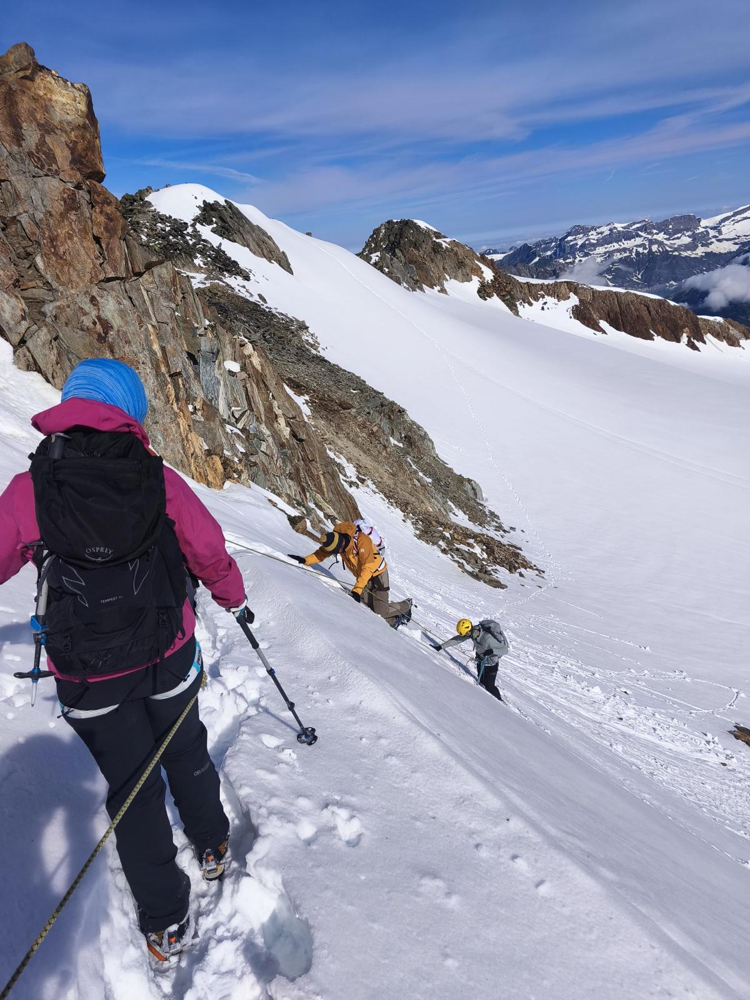
6th June 2026
We spent this time doing some training in the use of our crampons and ice axes and also being tied together. At one point the wind picked up severely and it was very difficult to hear or see too well. I learnt some valuable lessons about walking in the conditions and maintaining slow and steady pace. I also did some practice of ice axe arrests which was more difficult then I realised! We even witnessed some massive rock falls!
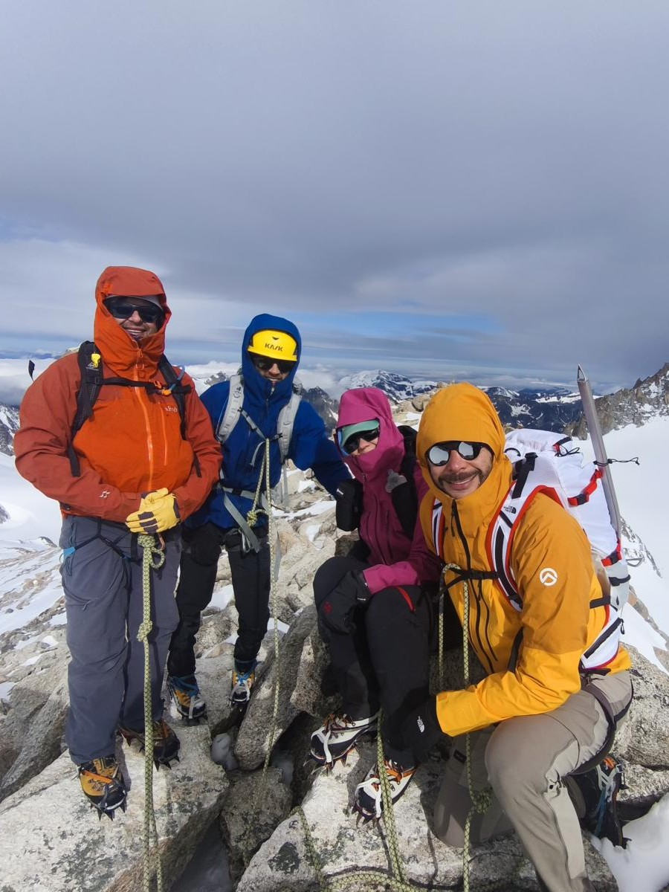
7th June 2026
It was time to head back down to get prepared for the summit push. On the way down there was some steep snow which I decided to slide down. Poor choice, as I got up to some crazy speeds! But I made it down way ahead of the others so there was that. Going down was actually one of the harder parts on the knees. But we made it down and started getting together our gear to start our journey up tot he summit.
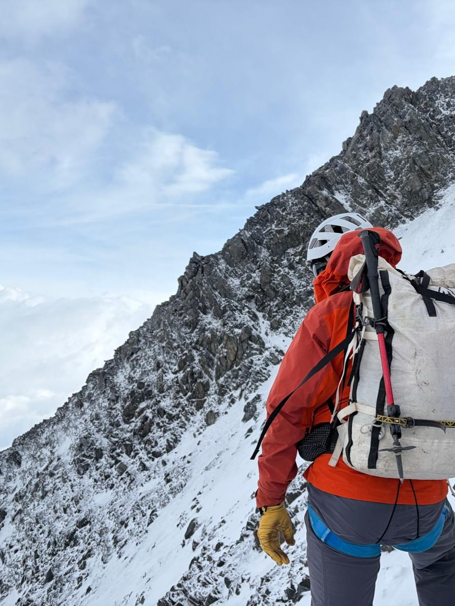
8th June 2026
It is amazing how the seasons feel like they change as you go up the mountain. Meeting in the parking lot it felt like the beginning of summer (which it was) but the further we climbed the more layers we put on and the more snow started to accumulate. We caught the cable car up part of the way and needed to walk the rest as the train was not operational this early in the season. We saw another chamois but not much other wildlife was around here. We made it up to our 1st hut and started to talk about the weather, which would make it difficult to reach the summit in our window. We still had hope though...
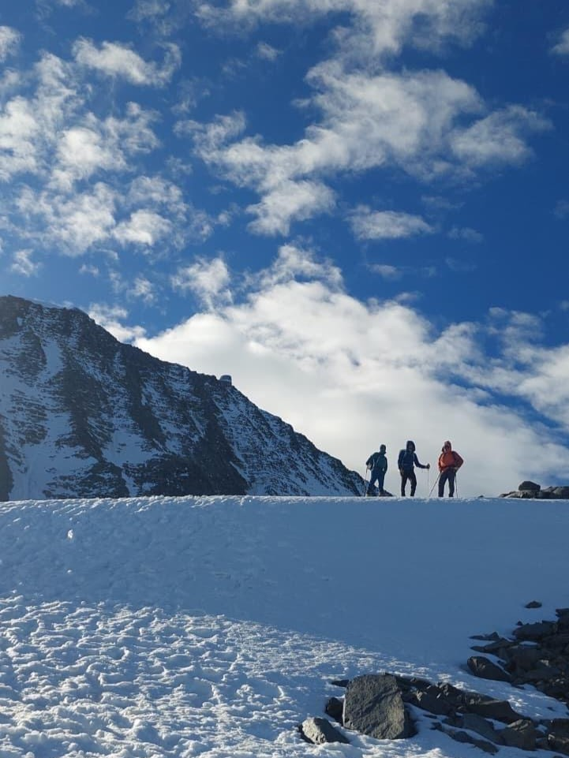
9th June 2026
While Mum headed down the rest of the group continued up to the Gouter hut. The climb involved some scrambling and gripping onto wires as we crossed the Grand Crevasse. As we made it over the top the wind nearly blew us off our feet, it wasn't looking good for our summit day which was to be tomorrow (and also our descent!). The Gouter hut was a spectacle too, it looked like a large shiny spaceship perched on the edge of the mountain. The amenities again were very pleasant and dinner was excellent.
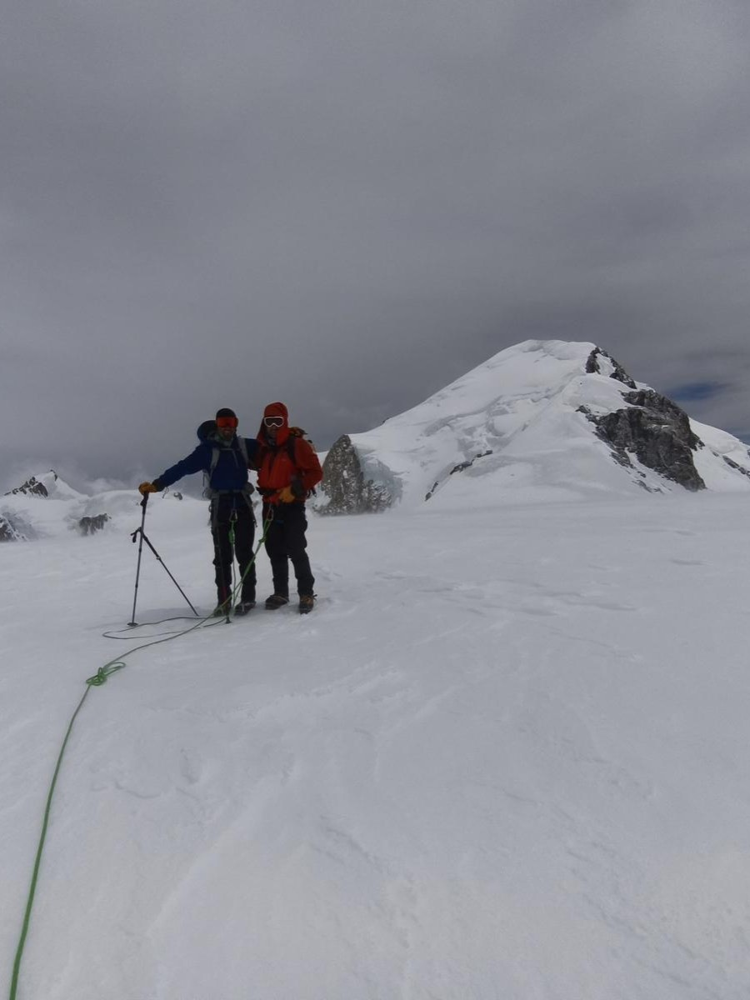
10th June 2026
We got up super early to make a push for the summit, I had slept well considering we were nearly 4200m up! As soon as we exited the hut we realised that the conditions were TOUGH! As we crossed an exposed ridge close to our hut we were nearly blown of our feet. There were times when we had to drop close to the ground to stop the wind from blowing us off the mountain. The climbing itself wasn't too much of a challenge and nor was the cold but the conditions did seem to be against us. We made it to the Dome de Gouter and could see the summit just a short distance away. But unfortunately everyone agreed that the conditions were too dangerous to continue. So we headed all the way back down the mountain to the base. I will never forget the view from the Dome de Gouter, the clouds sitting below provided such a different perspective from what I am used to and it felt like we were truly alone on top of the mountain.
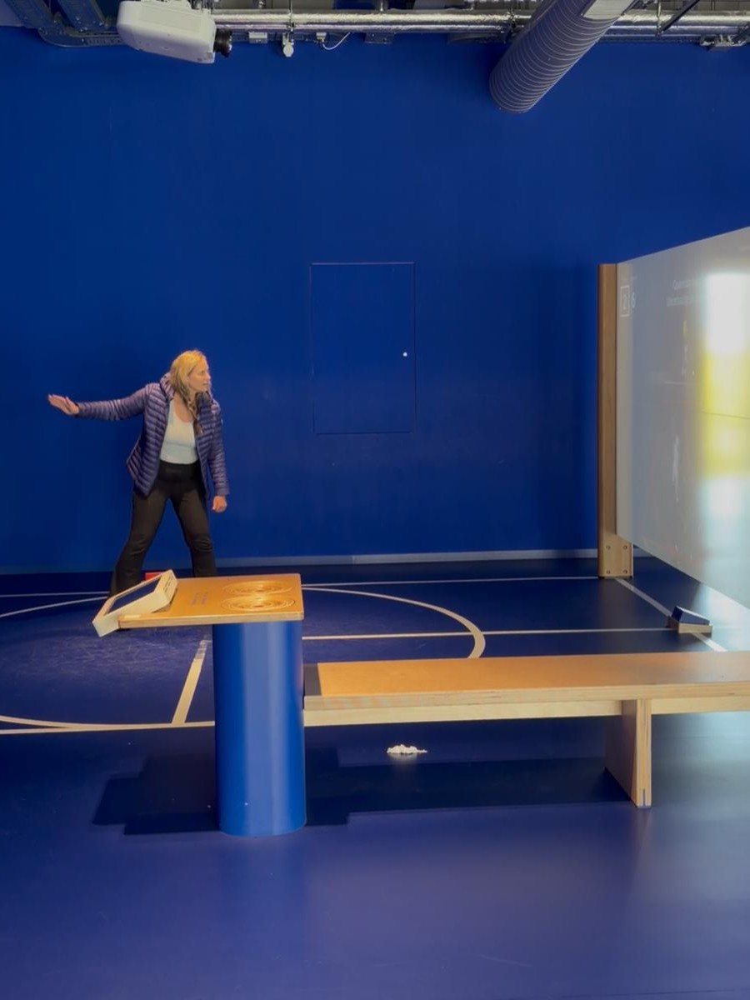
11th June 2026
We headed back into Geneva by bus, with the customary late bus (we were not sure if it would arrive at all!). Dave and Mum checked into the hotel but I was flying out that same day. We made the most of the day by going to see the Large Hadron Collider and learning a little bit about the physics behind it. Then it was time to hop on my train to the airport and head back into London!